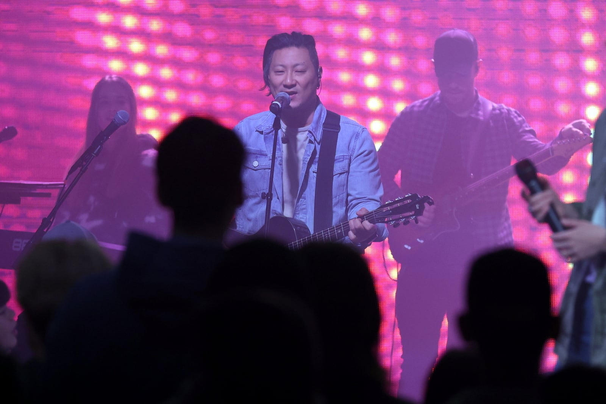
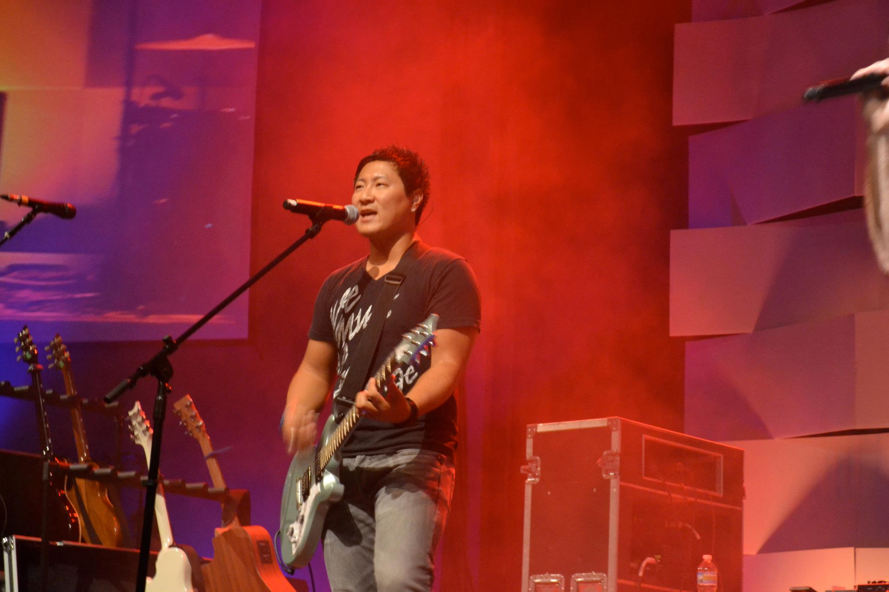
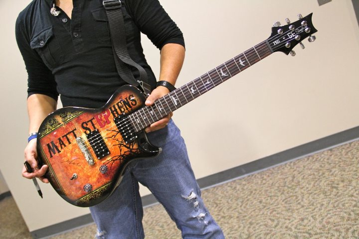
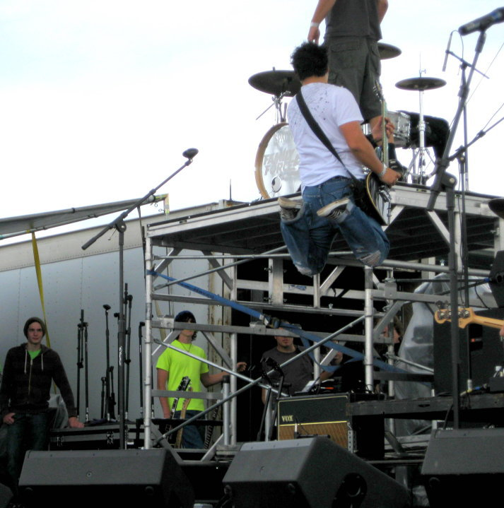
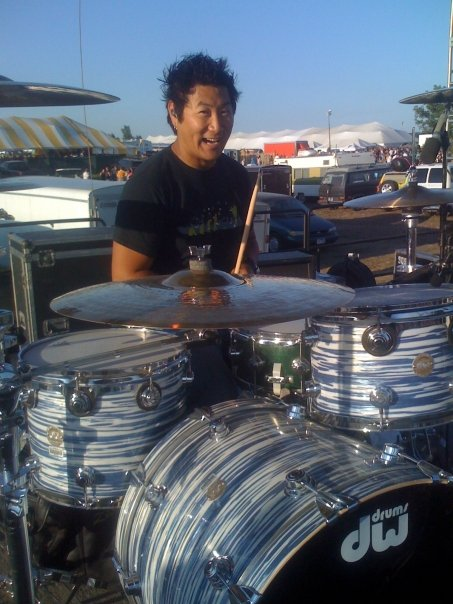
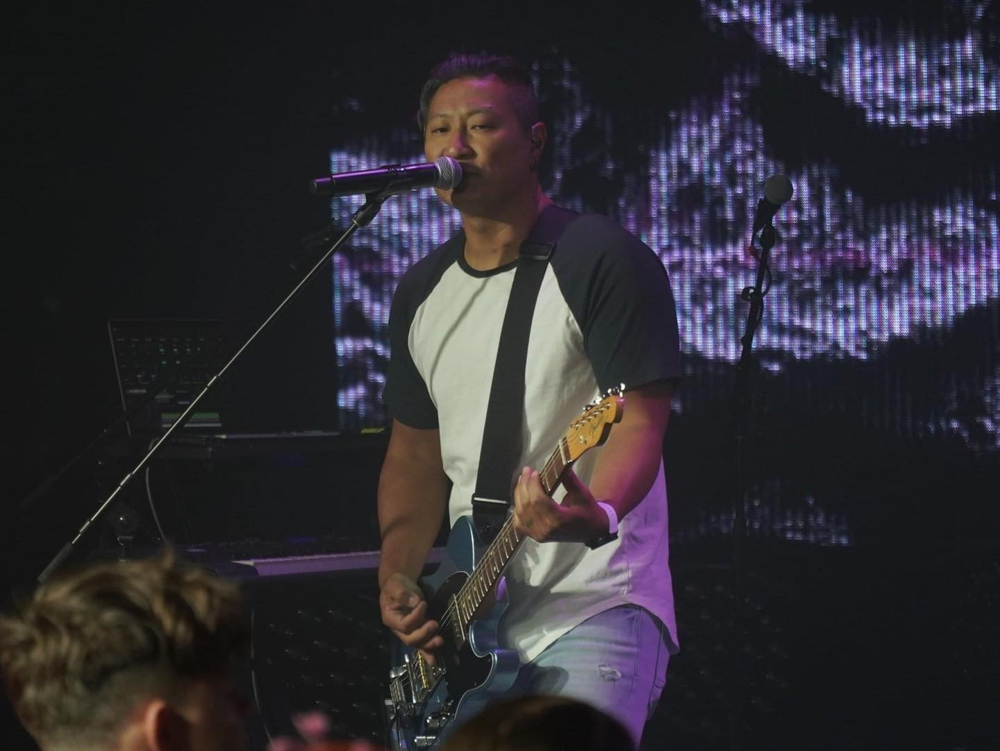
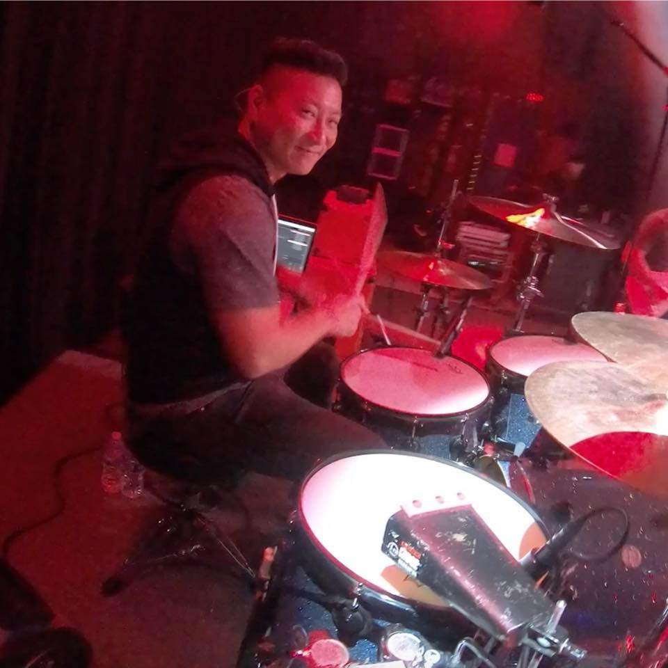
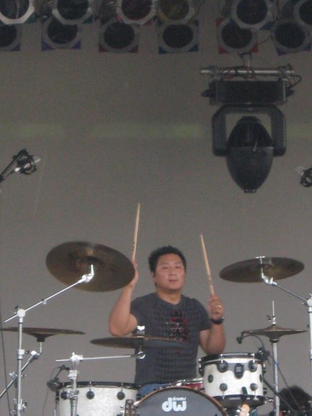

I've gotten to do a lot of pretty cool things in my time as a professional musician over the past 20 or so years. I've always felt most at home performing, whether it was as a member of a band, a hired gun, working in the church, studio work, or as a solo artist.
I was a member of the bands Shattered, The Marquette Weekend, The Great Romance and The Lone Rangers (I'm still a part of this one!) As a hired gun, I toured with and/or backed up Brooke Barrettsmith (Sony Records/American Idol), Elle Limebear, Stu G, Aaron Shust, JJ Weeks, Relient K, Jeremy Lopez, Kenny DeShields, Lloyd Nicks, Brad Miller, Nathan Smith, Pillar, Superchick, and Seventh Day Slumber.
On top of performing, I have worked as a producer and engineer in the studio, a writer for other artists, and taught music both privately and in a school setting.
Photos
 
Albums
I released the following albums as a performer.
The Marquetter Weekend : Volume 1The Great Romance: Max Power, Creator, Our Hearts
Solo: Matt Stephens EP, Hello, How Are You?
Matt & Sarah: Where Do We Begin?
I released the following albums as a producer, engineer, and/or hired musician.
Nathan Smith: Hymns and VersesBrad Miller: A Portrait of Me
Brad Miller: Both Sides of This
Brad Miller: Bleeding For You
Crossing Collective: Hope Wins
Crossing Collective: Emmanuel
Tom Wehrle: Room To Dream
Liberation Music Compilation
On Manchester (Unreleased)